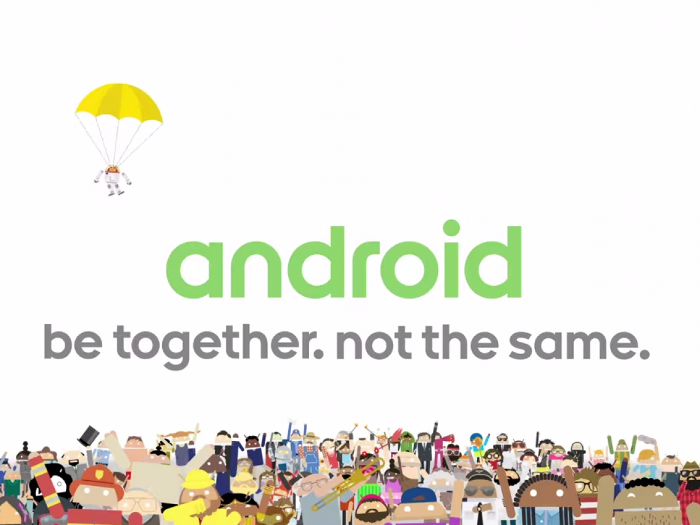
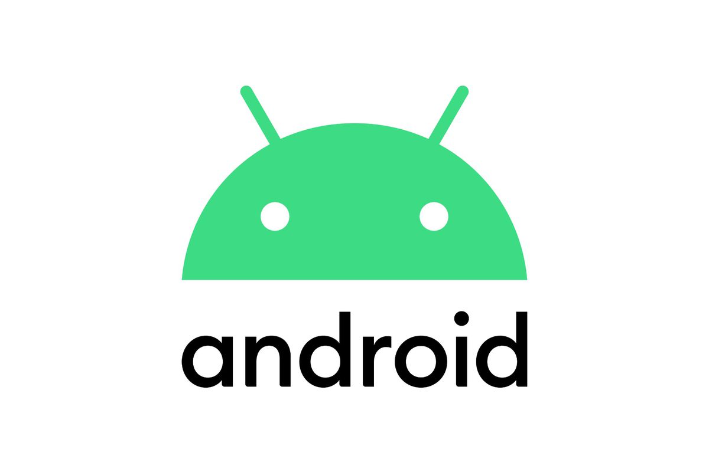

Android 개요
Be together, Not the same
함께 있도록, 그러나 똑같지 않게
안드로이드란?
리눅스 커널을 기반으로 구글에서 제작한 스마트폰과
같은 플랫폼의 모바일 운영 체제 와 미들웨어 및 중요 애플리케이션이 포함된 소프트웨어의 집합이다
구글은 새로운 우영 체제의 버전 공개와 동시에 소스를 공개하고 있다.
이렇게 공개된 소스를 AOSP라고 한다.
Android는 세계에서 가장 대표적인 오픈소스 플랫폼이며 세계 최다 사용자를 보유한 운영체제다.
2008년에 1.0버전을 첫 출시하였다.

